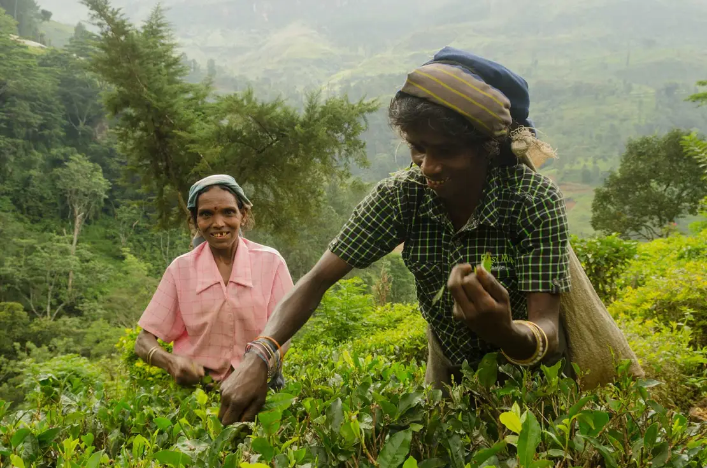

Dehiowita Tamil Mahavidyalayam
Situated in Dehiowita, Sri Lanka, Dehiowita Tamil Mahavidyalayam is an educational institution with a century-old history. Established in 1906 within the premises of the Church, the school has evolved into a prominent center of education, catering to generations of students.
Originating from modest beginnings, Dehiowita Tamil Mahavidyalayam underwent a transition from Christian ownership to government administration in 1963, a pivotal move aimed at widening access to quality education for the local populace. The year 1977 marked a notable milestone when the school found its permanent location in Dehiowita, reinforcing its commitment to imparting knowledge and values.
A substantial setback occurred in 2016 when a devastating landslide inflicted severe damage on the school's infrastructure, disrupting its academic activities. However, the resilience of the community demonstrated their unwavering dedication to education.
Discriminatory Life of Estate Tamil People in Sri Lanka
The history of estate Tamil people in Sri Lanka is marred by a long-standing legacy of
discrimination, exploitation, and marginalization. Descendants of laborers brought by the
British during colonial rule to work on tea and coffee plantations, estate Tamils have faced
systemic challenges that have deprived them of their rights, opportunities, and dignity.
Estate Tamil people, also known as Indian Tamils, form a significant segment of Sri Lanka's
population. Their origins date back to the 19th century when the British colonial authorities
brought them to the island to work on plantations. Despite their integral role in the country's
tea industry and the broader economy, estate Tamils have been subjected to a range of
discriminatory practices that have perpetuated their socio-economic disadvantages.
